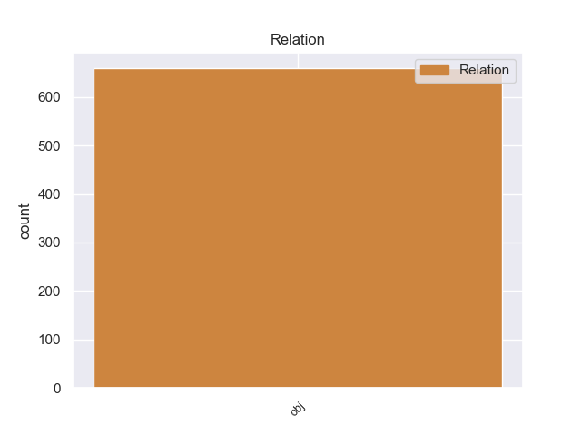
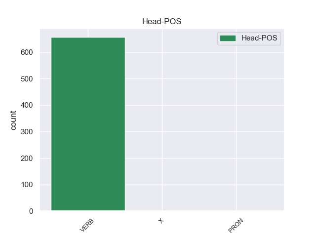
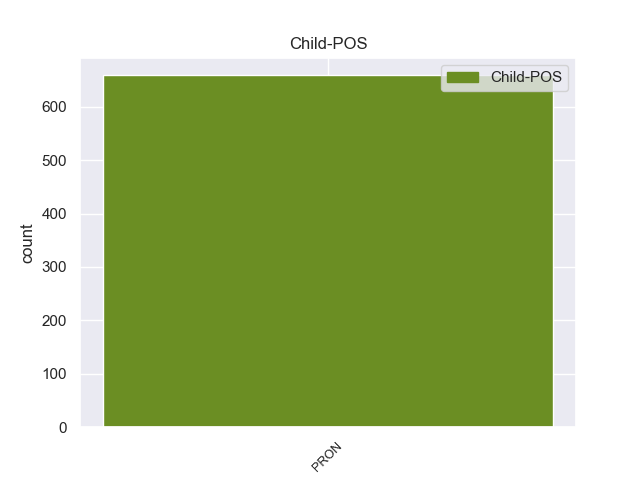

Distribution of features within this leaf



Agreement Rules sorted by frequency.
- When the dependent token is the object(obj) of the head token,
1 De _ _ _ _ 0 _ _ _
2 la _ _ _ _ 0 _ _ _
3 Vega _ _ _ _ 0 _ _ _
4 ha _ _ _ _ 0 _ _ _
5 pedido _ _ _ _ 0 _ _ _
6 respetar _ _ _ _ 0 _ _ _
7 los _ _ _ _ 0 _ _ _
8 tiempos _ _ _ _ 0 _ _ _
9 de _ _ _ _ 0 _ _ _
10 los _ _ _ _ 0 _ _ _
11 procesos _ _ _ _ 0 _ _ _
12 y _ _ _ _ 0 _ _ _
13 de _ _ _ _ 0 _ _ _
14 la _ _ _ _ 0 _ _ _
15 misma _ _ _ _ 0 _ _ _
16 manera _ _ _ _ 0 _ _ _
17 que _ _ _ _ 0 _ _ _
18 no _ _ _ _ 0 _ _ _
19 ha _ _ _ _ 0 _ _ _
20 querido _ _ _ _ 0 _ _ _
21 entrar _ _ _ _ 0 _ _ _
22 en _ _ _ _ 0 _ _ _
23 la _ _ _ _ 0 _ _ _
24 salida _ _ _ _ 0 _ _ _
25 de _ _ _ _ 0 _ _ _
26 Corbacho _ _ _ _ 0 _ _ _
27 , _ _ _ _ 0 _ _ _
28 tampoco _ _ _ _ 0 _ _ _
29 lo _ _ _ _ 0 _ _ _
30 ha _ _ _ _ 0 _ _ _
31 hecho _ _ _ _ 0 _ _ _
32 la _ _ _ _ 0 _ _ _
33 posible _ _ _ _ 0 _ _ _
34 salida _ _ _ _ 0 _ _ _
35 de _ _ _ _ 0 _ _ _
36 Trinidad _ _ _ _ 0 _ _ _
37 Jiménez _ _ _ _ 0 _ _ _
38 , _ _ _ _ 0 _ _ _
39 que _ _ _ _ 0 _ _ _
40 le él PRON _ Case=Dat|Number=Sing|Person=3|PronType=Prs 41 obj _ _
41 acompañaba acompañar VERB _ Mood=Ind|Number=Sing|Person=3|Tense=Imp|VerbForm=Fin 0 _ _ _
42 en _ _ _ _ 0 _ _ _
43 la _ _ _ _ 0 _ _ _
44 sala _ _ _ _ 0 _ _ _
45 de _ _ _ _ 0 _ _ _
46 prensa _ _ _ _ 0 _ _ _
47 . _ _ _ _ 0 _ _ _
Disagree Examples:
1 Os _ _ _ _ 0 _ _ _
2 lo él PRON _ Case=Acc|Gender=Masc|Number=Sing|Person=3|PrepCase=Npr|PronType=Prs 3 obj _ _
3 recomiendo recomir VERB _ Mood=Ind|Number=Sing|Person=1|Tense=Pres|VerbForm=Fin 0 _ _ _
4 y _ _ _ _ 0 _ _ _
5 mas _ _ _ _ 0 _ _ _
6 sabiendo _ _ _ _ 0 _ _ _
7 lo _ _ _ _ 0 _ _ _
8 que _ _ _ _ 0 _ _ _
9 hay _ _ _ _ 0 _ _ _
10 por _ _ _ _ 0 _ _ _
11 ahi _ _ _ _ 0 _ _ _
12 fuera _ _ _ _ 0 _ _ _
13 . _ _ _ _ 0 _ _ _
1 La _ _ _ _ 0 _ _ _
2 última _ _ _ _ 0 _ _ _
3 vez _ _ _ _ 0 _ _ _
4 ni _ _ _ _ 0 _ _ _
5 me yo PRON _ Case=Acc,Dat|Number=Sing|Person=1|PrepCase=Npr|PronType=Prs 6 obj _ _
6 saludaron saludar VERB _ Mood=Ind|Number=Plur|Person=3|Tense=Past|VerbForm=Fin 0 _ _ _
7 ni _ _ _ _ 0 _ _ _
8 me _ _ _ _ 0 _ _ _
9 dieron _ _ _ _ 0 _ _ _
10 las _ _ _ _ 0 _ _ _
11 gracias _ _ _ _ 0 _ _ _
12 por _ _ _ _ 0 _ _ _
13 comprar _ _ _ _ 0 _ _ _
14 . _ _ _ _ 0 _ _ _
1 Me _ _ _ _ 0 _ _ _
2 han _ _ _ _ 0 _ _ _
3 robado _ _ _ _ 0 _ _ _
4 la _ _ _ _ 0 _ _ _
5 cartera _ _ _ _ 0 _ _ _
6 con _ _ _ _ 0 _ _ _
7 toda _ _ _ _ 0 _ _ _
8 la _ _ _ _ 0 _ _ _
9 documentación _ _ _ _ 0 _ _ _
10 , _ _ _ _ 0 _ _ _
11 busco _ _ _ _ 0 _ _ _
12 en _ _ _ _ 0 _ _ _
13 la _ _ _ _ 0 _ _ _
14 Web _ _ _ _ 0 _ _ _
15 de _ _ _ _ 0 _ _ _
16 www.dgt.es _ _ _ _ 0 _ _ _
17 para _ _ _ _ 0 _ _ _
18 obtener _ _ _ _ 0 _ _ _
19 información _ _ _ _ 0 _ _ _
20 de _ _ _ _ 0 _ _ _
21 como _ _ _ _ 0 _ _ _
22 volver _ _ _ _ 0 _ _ _
23 a _ _ _ _ 0 _ _ _
24 obtener _ _ _ _ 0 _ _ _
25 el _ _ _ _ 0 _ _ _
26 permiso _ _ _ _ 0 _ _ _
27 y _ _ _ _ 0 _ _ _
28 niguna _ _ _ _ 0 _ _ _
29 de _ _ _ _ 0 _ _ _
30 las _ _ _ _ 0 _ _ _
31 opciones _ _ _ _ 0 _ _ _
32 contempla _ _ _ _ 0 _ _ _
33 este _ _ _ _ 0 _ _ _
34 supuesto _ _ _ _ 0 _ _ _
35 o _ _ _ _ 0 _ _ _
36 almenos _ _ _ _ 0 _ _ _
37 no _ _ _ _ 0 _ _ _
38 he _ _ _ _ 0 _ _ _
39 sabido _ _ _ _ 0 _ _ _
40 encontrar _ _ _ _ 0 _ _ _
41 lo _ _ _ _ 0 _ _ _
42 , _ _ _ _ 0 _ _ _
43 llamo _ _ _ _ 0 _ _ _
44 por _ _ _ _ 0 _ _ _
45 telefono _ _ _ _ 0 _ _ _
46 y _ _ _ _ 0 _ _ _
47 NO _ _ _ _ 0 _ _ _
48 RESPONDEN _ _ _ _ 0 _ _ _
49 y _ _ _ _ 0 _ _ _
50 ademas _ _ _ _ 0 _ _ _
51 sale _ _ _ _ 0 _ _ _
52 una _ _ _ _ 0 _ _ _
53 locución _ _ _ _ 0 _ _ _
54 casi _ _ _ _ 0 _ _ _
55 imperceptible _ _ _ _ 0 _ _ _
56 que _ _ _ _ 0 _ _ _
57 te tú PRON _ Case=Acc,Dat|Number=Sing|Person=2|PrepCase=Npr|PronType=Prs 58 obj _ _
58 remiten remitir VERB _ Mood=Ind|Number=Plur|Person=3|Tense=Pres|VerbForm=Fin 0 _ _ _
59 a _ _ _ _ 0 _ _ _
60 la _ _ _ _ 0 _ _ _
61 Web _ _ _ _ 0 _ _ _
62 , _ _ _ _ 0 _ _ _
63 un _ _ _ _ 0 _ _ _
64 -10 _ _ _ _ 0 _ _ _
65 por _ _ _ _ 0 _ _ _
66 el _ _ _ _ 0 _ _ _
67 servicio _ _ _ _ 0 _ _ _
68 :-( _ _ _ _ 0 _ _ _
1 Su _ _ _ _ 0 _ _ _
2 punto _ _ _ _ 0 _ _ _
3 más _ _ _ _ 0 _ _ _
4 alto _ _ _ _ 0 _ _ _
5 y _ _ _ _ 0 _ _ _
6 característico _ _ _ _ 0 _ _ _
7 lo él PRON _ Case=Acc|Gender=Masc|Number=Sing|Person=3|PrepCase=Npr|PronType=Prs 8 obj _ _
8 encontramos encontrar VERB _ Mood=Ind|Number=Plur|Person=1|Tense=Pres|VerbForm=Fin 0 _ _ _
9 en _ _ _ _ 0 _ _ _
10 el _ _ _ _ 0 _ _ _
11 monte _ _ _ _ 0 _ _ _
12 Kapydzhik _ _ _ _ 0 _ _ _
13 , _ _ _ _ 0 _ _ _
14 que _ _ _ _ 0 _ _ _
15 llega _ _ _ _ 0 _ _ _
16 a _ _ _ _ 0 _ _ _
17 los _ _ _ _ 0 _ _ _
18 2.415 _ _ _ _ 0 _ _ _
19 m _ _ _ _ 0 _ _ _
20 . _ _ _ _ 0 _ _ _
1 Muy _ _ _ _ 0 _ _ _
2 buen _ _ _ _ 0 _ _ _
3 taller _ _ _ _ 0 _ _ _
4 , _ _ _ _ 0 _ _ _
5 de _ _ _ _ 0 _ _ _
6 los _ _ _ _ 0 _ _ _
7 de _ _ _ _ 0 _ _ _
8 toda _ _ _ _ 0 _ _ _
9 la _ _ _ _ 0 _ _ _
10 vida _ _ _ _ 0 _ _ _
11 , _ _ _ _ 0 _ _ _
12 me yo PRON _ Case=Acc,Dat|Number=Sing|Person=1|PrepCase=Npr|PronType=Prs 13 obj _ _
13 atendieron atender VERB _ Mood=Ind|Number=Plur|Person=3|Tense=Past|VerbForm=Fin 0 _ _ _
14 muy _ _ _ _ 0 _ _ _
15 bien _ _ _ _ 0 _ _ _
16 y _ _ _ _ 0 _ _ _
17 me _ _ _ _ 0 _ _ _
18 solucionaron _ _ _ _ 0 _ _ _
19 la _ _ _ _ 0 _ _ _
20 averia _ _ _ _ 0 _ _ _
21 en _ _ _ _ 0 _ _ _
22 poco _ _ _ _ 0 _ _ _
23 tiempo _ _ _ _ 0 _ _ _
24 ya _ _ _ _ 0 _ _ _
25 muy _ _ _ _ 0 _ _ _
26 buen _ _ _ _ 0 _ _ _
27 precio _ _ _ _ 0 _ _ _
28 . _ _ _ _ 0 _ _ _